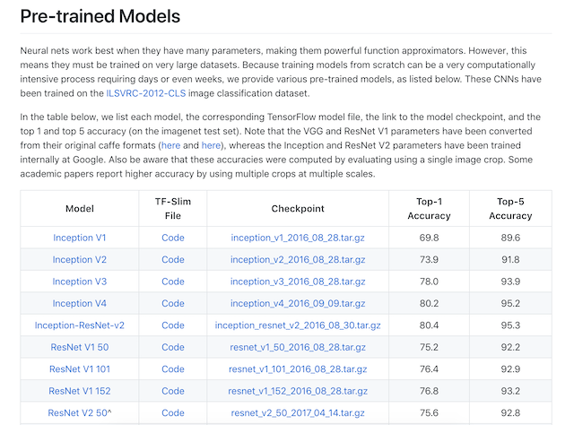

4.4 案例：CNN进行分类¶
学习目标¶
- 目标
- 掌握keras卷积网络相关API
- 掌握卷机网络的构建
- 了解迁移学习以及tf.keras.applications使用
- 应用
4.4.1 卷积神经网络构建识别手写数字¶
卷积神经网络包含一个或多个卷积层（Convolutional Layer）、池化层（Pooling Layer）和全连接层（Fully-connected Layer）。
4.4.1.1 使用 Keras 实现卷积神经网络¶
卷积神经网络的一个实现现如下所示，新加入了一些卷积层和池化层。当然这个网络可以增加、删除或调整 CNN 的网络结构和参数，以达到更好效果。
class CNN(tf.keras.Model):
def __init__(self):
super().__init__()
self.conv1 = tf.keras.layers.Conv2D(
filters=32, # 卷积层神经元（卷积核）数目
kernel_size=[5, 5], # 感受野大小
padding='same', # padding策略（vaild 或 same）
activation=tf.nn.relu # 激活函数
)
self.pool1 = tf.keras.layers.MaxPool2D(pool_size=[2, 2], strides=2)
self.conv2 = tf.keras.layers.Conv2D(
filters=64,
kernel_size=[5, 5],
padding='same',
activation=tf.nn.relu
)
self.pool2 = tf.keras.layers.MaxPool2D(pool_size=[2, 2], strides=2)
self.flatten = tf.keras.layers.Reshape(target_shape=(7 * 7 * 64,))
self.dense1 = tf.keras.layers.Dense(units=1024, activation=tf.nn.relu)
self.dense2 = tf.keras.layers.Dense(units=10)
def call(self, inputs):
x = self.conv1(inputs) # [batch_size, 28, 28, 32]
x = self.pool1(x) # [batch_size, 14, 14, 32]
x = self.conv2(x) # [batch_size, 14, 14, 64]
x = self.pool2(x) # [batch_size, 7, 7, 64]
x = self.flatten(x) # [batch_size, 7 * 7 * 64]
x = self.dense1(x) # [batch_size, 1024]
x = self.dense2(x) # [batch_size, 10]
output = tf.nn.softmax(x)
return output
将前节的 model = MLP() 更换成 model = CNN() ，训练结束以及预测输出：
批次 4682: 损失 0.010545
批次 4683: 损失 0.003783
批次 4684: 损失 0.000980
测试准确率: 0.990600
可以发现准确率相较于之前的多层感知机有非常显著的提高。
我们来看一个个问题如果我们要做一个具体场景的计算机视觉任务，那么从头开始训练一个网络是合适的选择吗？怎么样才能避免浪费过多的计算时间？
4.4.2 迁移学习(Transfer Learning)-Keras 中预定义的经典卷积神经网络结构¶
4.4.2.1 介绍¶
- 定义
- 迁移学习就是**利用数据、任务或模型之间的相似性，将在旧的领域学习过或训练好的模型，应用于新的领域这样的一个过程。**
- 两个任务的输入属于同一性质：要么同是图像、要么同是语音或其他
迁移学习到底在什么情况下使用呢？有两个方面需要我们考虑的
- 1、当我们有海量的数据资源时，可以不需要迁移学习，**机器学习系统很容易从海量数据中学习到一个鲁棒性很强的模型。**但通常情况下，我们需要研究的领域可获得的数据极为有限，在少量的训练样本上精度极高，但是泛化效果极差。
- 2、训练成本，很少去从头开始训练一整个深度卷积网络，从头开始训练一个卷积网络通常需要较长时间且依赖于强大的 GPU 计算资源。
4.4.2.2 方法¶
- 最常见的称呼叫做fine tuning,即微调
- 已训练好的模型，称之为Pre-trained model
通常我们需要加载以训练好的模型，这些可以是一些机构或者公司在ImageNet等类似比赛上进行训练过的模型。TensorFlow同样也提供了相关模型地址以及API：https://www.tensorflow.org/api_docs/python/tf/keras/applications，下图是其中包含的一些模型：

2.5.1.3 过程¶
这里我们举一个例子，假设有两个任务A和B，任务 A 拥有海量的数据资源且已训练好，但并不是我们的目标任务，任务 B 是我们的目标任务。下面的网络模型假设是已训练好的1000个类别模型

而B任务假设是某个具体场景如250个类别的食物识别，那么该怎么去做
- 1、建立自己的网络，在A的基础上，修改最后输出结构，并加载A的模型参数
- 2、根据数据大小调整
- 如果B任务数据量小，那么我们可以选择将A模型的所有的层进行freeze(可以通过Tensorflow的trainable=False参数实现)，而剩下的输出层部分可以选择调整参数训练
- 如果B任务的数据量大，那么我们可以将A中一半或者大部分的层进行freeze,而剩下部分的layer可以进行新任务数据基础上的微调
4.4.2 使用¶
tf.keras.applications 中有一些预定义好的经典卷积神经网络结构，如 VGG16 、 VGG19 、 ResNet 、 MobileNet 等。我们可以直接调用这些经典的卷积神经网络结构（甚至载入预训练的参数），而无需手动定义网络结构。
- 支持以下结构：
- densenet module: DenseNet models for Keras.
- imagenet_utils module: Utilities for ImageNet data preprocessing & prediction decoding.
- inception_resnet_v2 module: Inception-ResNet V2 model for Keras.
- inception_v3 module: Inception V3 model for Keras.
- mobilenet module: MobileNet v1 models for Keras.
- mobilenet_v2 module: MobileNet v2 models for Keras.
- nasnet module: NASNet-A models for Keras.
- resnet module: ResNet models for Keras.
- resnet50 module: Public API for tf.keras.applications.resnet50 namespace.
- resnet_v2 module: ResNet v2 models for Keras.
- vgg16 module: VGG16 model for Keras.
- vgg19 module: VGG19 model for Keras.
-
xception module: Xception V1 model for Keras.
-
我们可以使用以下代码来实例化一个 MobileNetV2 网络结构：
- model = tf.keras.applications.MobileNetV2()
- input_shape ：输入张量的形状（不含第一维的 Batch），大多默认为 224 × 224 × 3 。一般而言，模型对输入张量的大小有下限，长和宽至少为 32 × 32 或 75 × 75 ；
-
include_top ：在网络的最后是否包含全连接层，默认为 True ；
-
weights ：预训练权值，默认为 'imagenet' ，即为当前模型载入在 ImageNet 数据集上预训练的权值。如需随机初始化变量可设为 None ；
-
classes ：分类数，默认为 1000。修改该参数需要 include_top 参数为 True 且 weights 参数为 None 。
当执行以上代码时，TensorFlow 会自动从网络上下载 MobileNetV2 网络结构，因此在第一次执行代码时需要具备网络连接。
可以使用 MobileNetV2 网络对相关数据集进行训练看看效果
model = tf.keras.applications.MobileNetV2(weights=None, classes=5)
4.4.3 总结¶
- 掌握keras卷积网络相关API
- 卷机网络的构建
- 迁移学习以及tf.keras.applications使用